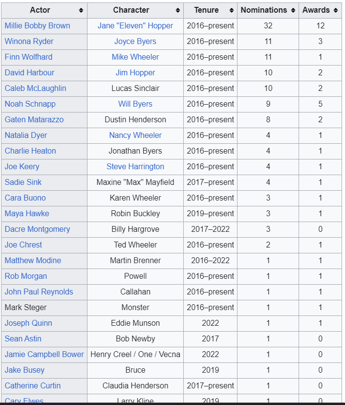

Stranger Things is an American science fiction horror drama television series created by the Duffer Brothers for Netflix.Produced by Monkey Massacre Productions and 21 Laps Entertainment, the first season was released on Netflix on July 15, 2016.
The second and third seasons followed in October 2017 and July 2019 respectively, and the fourth season was released in two parts in May and July 2022.
The fifth and final season of Stranger Things is expected to be released in 2025.
These are the pepole who played major role in this series
The series has received critical acclaim[7] and numerous accolades for its writing, acting, directing, production values, visual effects, and soundtrack. Stranger Things has been nominated for many awards, including 57 Primetime Emmy Awards (12 wins), four Golden Globe Awards, four Grammy Awards, four Critics' Choice Television Awards (one win), 13 Saturn Awards (four wins), two Producers Guild of America Awards (one win), three Writers Guild of America Awards, and two Peabody Awards (one win). It was also selected by the American Film Institute as one of its top 10 television programs of the year for the series' first two seasons. The main cast has been nominated for three Screen Actors Guild Award for Outstanding Performance by an Ensemble in a Drama Series nominations, winning in 2017. Millie Bobby Brown is the most nominated member of the cast. Brown, David Harbour, and Winona Ryder have received individual Screen Actors Guild Award nominations for their performances in the series. Brown and Harbour also received two Primetime Emmy Award nominations, while Harbour and Ryder were each nominated for a Golden Globe Award.
